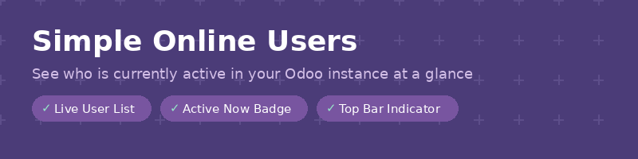
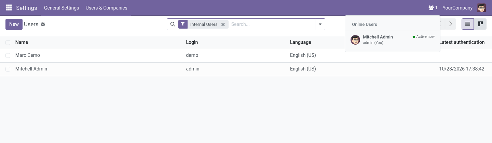

Know who is working in Odoo right now: a live count in the top bar and the list of names one hover away.
Odoo 18.0 Community & Enterprise Free · LGPL-3

Hovering the people icon lists who is online, with their status.
The number of online users sits in the top bar and updates by itself.
Hover to see each user's name, login and whether they are active now or away.
Show it to administrators only, all internal users, or portal users too.
Uses Odoo's own presence tracking: no new tables, no extra load.
Free and open source (LGPL-3) by Paulius Gaizauskas · Questions or bugs: GitHub issues